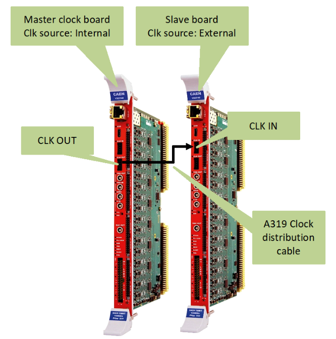
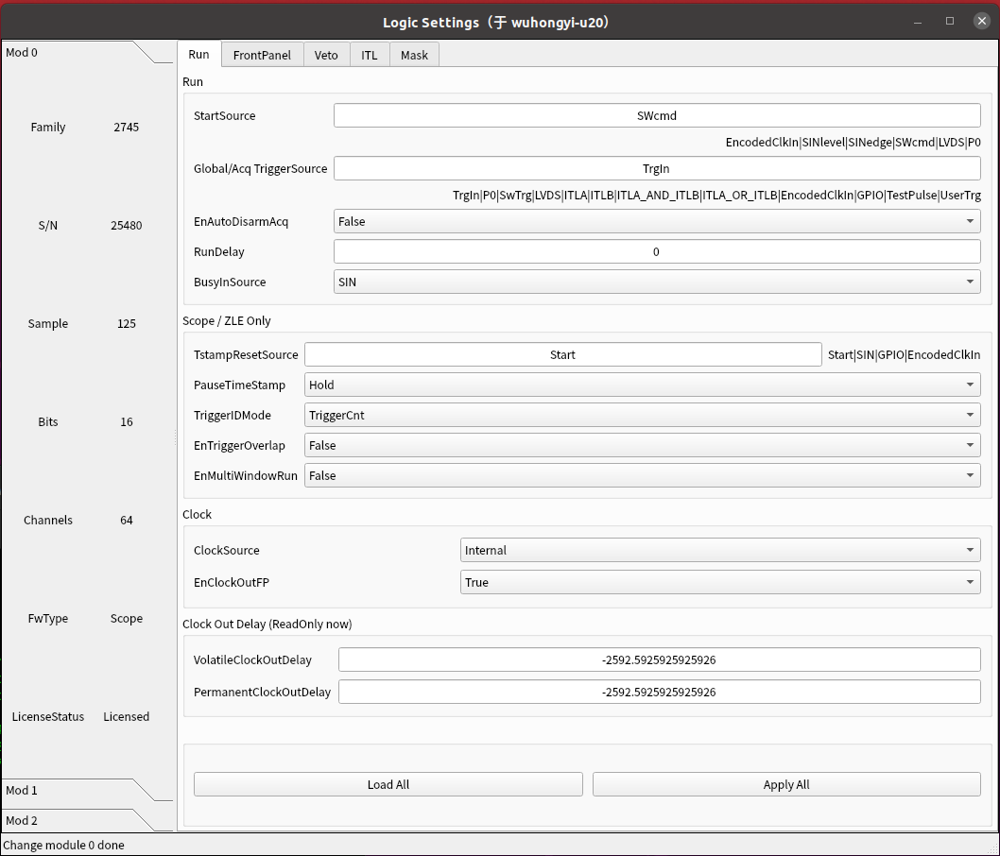
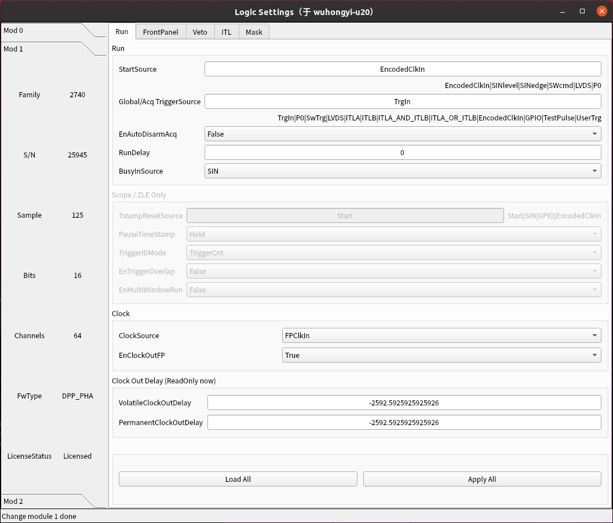

时间同步和采集
在多模块的采集系统中，一个最基本的要求是所有模块同步采集。其要求所有模块共用一个时钟源，然后同时开始和结束数据采集。
时钟源设置
CAEN 的时钟可通过前面板的 A319 线缆串连，也可通过机箱背板来共享时钟（开发中）。
下图为典型的时钟同步配置图，通过 A319 ，前一个的 CLK OUT 连接到后一个的 CLK IN。
链接时钟同步线缆之后，还需要依次对每个模块设置时钟源：
对于主模块，需要设置 ClockSource 为 Internal，设置 EnClockOutFP 为 True, 如下图所示：
对于所有的从模块，需要 ClockSource 为 FPClkIn，设置 EnClockOutFP 为 True, 如下图所示：
以上设置为将主模块的内部时钟通过前面板输出，从模块依次接收前一个模块通过前面板传输来的时钟信号。
同步采集
对于一个同步的系统，通常主模块设置为用来控制获取的开始、结束，其它从模块也需要进行相应的一些设置。通过前面板来控制获取的开始和结束，常用有以下三种方式：SYNC-CLKIN、SIN-GPIO、SIN-TRGOUT。其中 SYNC-CLKIN 是最广泛被使用的，因其包含在前面板的时钟同步线内，而另外两种则需要占用前面板上的 SIN/GPIO/TRGOUT LEMO 端口，常用于与其它获取系统的同步采集。
SYNC-CLKIN
主模块需要将 StartSource 设置为 SWcmd，将 SyncOutMode 设置为 Run。所有从模块将 StartSource 设置为 EncodedClkIn， 将 SyncOutMode 设置为 SyncIn。
SIN-GPIO
主模块需要将 StartSource 设置为 SWcmd，将 GPIOMode 设置为 Run。 所有从模块将 StartSource 设置为 SINlevel，将 GPIOMode 设置为 SIN。
SIN-TRGOUT
将主模块的 TRGOUT 连接到第一个从模块的 SIN，依次类推。
主模块需要将 StartSource 设置为 SWcmd，将 TrgOutMode 设置为 Run。所有从模块将 StartSource 设置为 SINlevel，将 TrgOutMode 设置为 Run。